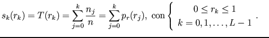
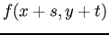

Siguiente: Filtrado de alta potencia Subir: Realce de imágenes en Anterior: Ecualización de histograma Índice General
Un filtro pasa altos puede ser aplicado mediante la convolución de la imagen con un kernel pasa altos que puede ser de diferentes tamaños y que según esto, actuará de diferentes maneras (realzando en mayor o menor medida los detalles). Si definimos a  como el valor de los pÃxeles del bloque seleccionado de la imagen y  los coeficientes del kernel, se puede expresar el filtrado lineal con la expresión definida en la ecuación (2.7).
Si la suma de los coeficientes del kernel es 1, se realzan las altas frecuencias conservándose el brillo medio de la imagen sobre la cual se aplica el filtro.